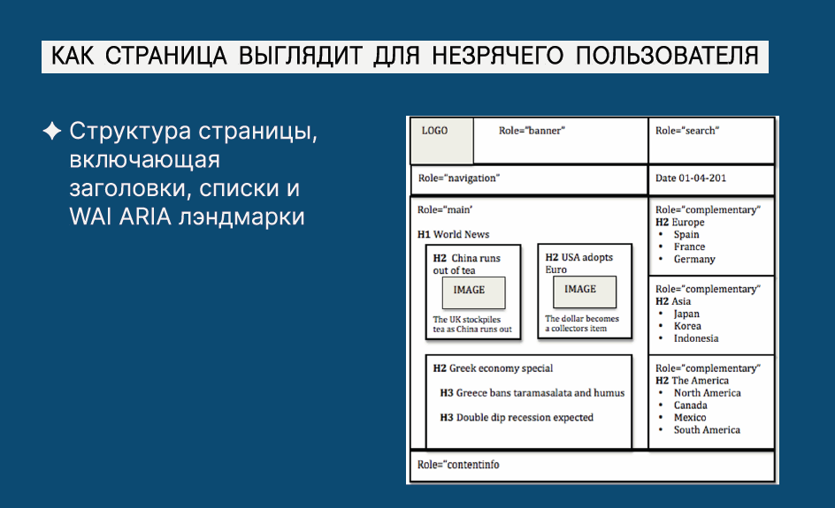
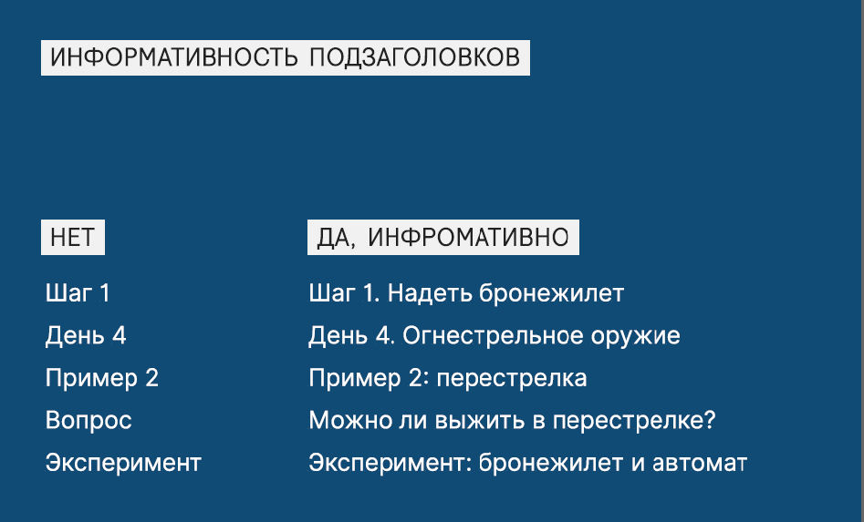

онлайн-конференция для тех, кто делает
удобные цифровые продукты

Войти
Информационная архитектура для незрячего пользователя
Одной из важных тем, затронутых на прошедшей совсем недавно онлайн-конференции
UX-Марафон #22 | Информационная архитектура
, стала accessibility – доступность цифрового продукта для людей с ограниченными возможностями.
Валерия Курмак, директор практики Human Experience в AIC, эксперт в области инклюзивного дизайна и автор телеграм-канала «Не исключение» рассказала слушателям конференции, как выглядит навигация для незрячих людей и как избежать ошибок при проектировании информационной архитектуры, чтобы создать по-настоящему доступный цифровой продукт.
1. У человека должна быть возможность воспринять контент.
2. У него должна быть возможность управлять контентом.
3. У него должна быть возможность понять контент.
Поскольку содержание сайта или мобильного приложения воспринимается незрячим человеком через скринридер – структура и контент должны предусматривать возможность корректного прочтения скринридером.
Заголовок страницы должен стоять в самом начале
Оказавшись на странице, человек в первую очередь должен понять, где именно он находится. Это значит, что первым элементом, который обнаружит и зачитает скринридер, должен быть не профиль, не поле ввода и не что-то ещё, а именно заголовок страницы.
Заголовки одного уровня должны иметь одинаковый размер
Структура заголовков с их стилями — основа навигации для незрячих. Поэтому так важно, чтобы заголовки имели правильную архитектуру и правильные уровни. В то же время текст, который не является заголовком, не должен выглядеть таковым.
Пример типичной ошибки – когда из соображений бизнеса или по замыслу дизайнера одноуровневые заголовки имеют в дизайн-макете разный размер, и разработчик, не разобравшись, прописывает их как заголовки разного уровня. А в результате для незрячего человека вся структура информации выглядит некорректно.
Заголовки и названия элементов должны быть понятными и максимально информативными
Для незрячего пользователя UX-редактура приобретает глобальное значение. Не имея других каналов восприятия, он по названию ссылки или надписи на кнопке должен чётко понять, что конкретно произойдёт при клике.
Так, например, «Шаг 1» – это плохой заголовок. Хорошим заголовком с точки зрения цифровой доступности будет «Первый шаг: создать аккаунт». Таким же осмысленным должен быть текст ссылки: не «тут», «здесь» или «посмотреть по этой ссылке», а «перейти на госуслуги», «купить товар».
Чтобы таблица была доступна для чтения скринридером, она должна быть сверстана соответствующим образом. Строки и столбцы должны иметь понятные названия, при этом желательно указывать общее количество строк (например, «третья строка из пяти»), чтобы незрячему пользователю было легче оценить общий объём информации.
Убирайте лишнюю информацию
Обратная ситуация – когда те же самые таблицы используются разработчиками исключительно для красоты и аккуратности вёрстки. Зрячему пользователю они не видны, но в коде остаются, и скринридер озвучит эту информацию, если её не скрыть.
У незрячего человека должна быть возможность сразу перейти к основному контенту, пропустив верхнее меню
Как уже говорилось, скринридер зачитывает информацию на странице по порядку, двигаясь слева направо и сверху вниз. Это не всегда удобно. Для того, чтобы незрячий человек мог быстро перейти к основному содержанию сайта, у скринридера есть очень важная функция skip to main content. Чтобы эта функция работала корректно, область с основным контентом должна быть выделена в коде. И здесь мы переходим к самому важному, базовому требованию к цифровому продукту с точки зрения accessibility.
Структура сайта/приложения должна быть предельно чёткой и продуманной
Почему это так важно? Дело в том, что зрячие люди видят страницу целиком. Мы тоже можем ошибаться, но в целом нам легче догадаться, что имел в виду дизайнер. Незрячий пользователь такой подсказки лишён. И в его случае отсутствие в коде логичной структуры и чётко выделенных областей может сделать цифровой продукт попросту недоступным.
Таким образом, доступность цифрового продукта для незрячих пользователей, не предполагает ничего специфического, ничего «инопланетного». Всё, что для этого требуется – грамотно выстроенная информационная архитектура и корректная вёрстка.
Полную версию доклада Валерии Курмак можно посмотреть в записи на платформе UX-Марафон. Там же доступны выступления других спикеров UX-Марафона #22: фундаментальная лекция по основам ИА от Алексея Бородкина, мастер-классы Павла Шерера, показавшего, как собрать информационную архитектуру с нуля, и Виталия Мазуревича – по карточной сортировке; доклады «Использование ментальных карт при работе с информационной архитектурой на примере XMind» Михаила Галушко и «Объектная модель в проектировании» Анастасии Поповой, а также два свежих кейса – инфоархитектурный разбор сервисной платформы для Почты России от Сергея Петрова и история создания новой ИА для сайта Банка России от Дениса Васильева.
Валерия Курмак, директор практики Human Experience в AIC, эксперт в области инклюзивного дизайна и автор телеграм-канала «Не исключение» рассказала слушателям конференции, как выглядит навигация для незрячих людей и как избежать ошибок при проектировании информационной архитектуры, чтобы создать по-настоящему доступный цифровой продукт.
Как «видит» сайт незрячий
Человеку с нормальным зрением ориентироваться на сайте или в мобильном приложении помогает визуальное оформление и структура цифрового продукта: заголовки разного уровня, выделенные области, меню, подвал. “Незрячие люди также ориентируются по элементам структуры, но то, что зрячий человек видит, незрячему зачитывает скринридер – специальная программа экранного доступа, которая обращается к коду и озвучивает контент, двигаясь слева направо и сверху вниз и переходя от заголовков первого уровня к более мелким” Если страница свёрстана корректно – человек может быстро «пробежаться» по ней, двигаясь от более крупных заголовков к заголовкам второго уровня, и попасть в нужный блок. Но если разметка некорректна (например, если заголовки, которые мы видим визуально, не имеют соответствующего обозначения в коде) – незрячему пользователю придётся прослушивать подряд всю информацию, которая есть на странице, пока он не доберётся до необходимого раздела. Вот почему так важно, чтобы все элементы структуры имели подписи, корректное отображение и понятные типы.

Проектируем для незрячих пользователей
Международный стандарт WCAG (Руководство по обеспечению доступности веб-контента) предусматривает три главных принципа, которым должен соответствовать цифровой продукт:1. У человека должна быть возможность воспринять контент.
2. У него должна быть возможность управлять контентом.
3. У него должна быть возможность понять контент.
Поскольку содержание сайта или мобильного приложения воспринимается незрячим человеком через скринридер – структура и контент должны предусматривать возможность корректного прочтения скринридером.
Заголовок страницы должен стоять в самом начале
Оказавшись на странице, человек в первую очередь должен понять, где именно он находится. Это значит, что первым элементом, который обнаружит и зачитает скринридер, должен быть не профиль, не поле ввода и не что-то ещё, а именно заголовок страницы.
“С точки зрения дизайна заголовок страницы может быть расположен где угодно. Но с точки зрения кода и доступности для скринридера очень важно, чтобы этот элемент был первым, который услышит незрячий пользователь. Тогда он поймёт, на какой странице он находится, и чего ему ждать от этой страницы”
Заголовки одного уровня должны иметь одинаковый размер
Структура заголовков с их стилями — основа навигации для незрячих. Поэтому так важно, чтобы заголовки имели правильную архитектуру и правильные уровни. В то же время текст, который не является заголовком, не должен выглядеть таковым.
Пример типичной ошибки – когда из соображений бизнеса или по замыслу дизайнера одноуровневые заголовки имеют в дизайн-макете разный размер, и разработчик, не разобравшись, прописывает их как заголовки разного уровня. А в результате для незрячего человека вся структура информации выглядит некорректно.
Заголовки и названия элементов должны быть понятными и максимально информативными
Для незрячего пользователя UX-редактура приобретает глобальное значение. Не имея других каналов восприятия, он по названию ссылки или надписи на кнопке должен чётко понять, что конкретно произойдёт при клике.
“Признак неинформативного заголовка – слова вроде «шаг», «день», «этап», «занятие», «вопрос», «пример», «случай», «эксперимент». Если после них стоит число, а после него ничего – есть повод повысить информативность”
Так, например, «Шаг 1» – это плохой заголовок. Хорошим заголовком с точки зрения цифровой доступности будет «Первый шаг: создать аккаунт». Таким же осмысленным должен быть текст ссылки: не «тут», «здесь» или «посмотреть по этой ссылке», а «перейти на госуслуги», «купить товар».

Таблица должна быть сверстана как таблица, а не как картинка
Чтобы таблица была доступна для чтения скринридером, она должна быть сверстана соответствующим образом. Строки и столбцы должны иметь понятные названия, при этом желательно указывать общее количество строк (например, «третья строка из пяти»), чтобы незрячему пользователю было легче оценить общий объём информации.
Убирайте лишнюю информацию
Обратная ситуация – когда те же самые таблицы используются разработчиками исключительно для красоты и аккуратности вёрстки. Зрячему пользователю они не видны, но в коде остаются, и скринридер озвучит эту информацию, если её не скрыть.
У незрячего человека должна быть возможность сразу перейти к основному контенту, пропустив верхнее меню
Как уже говорилось, скринридер зачитывает информацию на странице по порядку, двигаясь слева направо и сверху вниз. Это не всегда удобно. Для того, чтобы незрячий человек мог быстро перейти к основному содержанию сайта, у скринридера есть очень важная функция skip to main content. Чтобы эта функция работала корректно, область с основным контентом должна быть выделена в коде. И здесь мы переходим к самому важному, базовому требованию к цифровому продукту с точки зрения accessibility.
Структура сайта/приложения должна быть предельно чёткой и продуманной
Почему это так важно? Дело в том, что зрячие люди видят страницу целиком. Мы тоже можем ошибаться, но в целом нам легче догадаться, что имел в виду дизайнер. Незрячий пользователь такой подсказки лишён. И в его случае отсутствие в коде логичной структуры и чётко выделенных областей может сделать цифровой продукт попросту недоступным.
Таким образом, доступность цифрового продукта для незрячих пользователей, не предполагает ничего специфического, ничего «инопланетного». Всё, что для этого требуется – грамотно выстроенная информационная архитектура и корректная вёрстка.
“Очень простой совет – попробуйте, когда вы проектируете навигацию, представить себе структуру «дерева» так, как она будет выглядеть для незрячего пользователя. И тогда гарантирую вам, что и для зрячих людей абсолютно точно будет хорошая структура и понятная навигация”
Полную версию доклада Валерии Курмак можно посмотреть в записи на платформе UX-Марафон. Там же доступны выступления других спикеров UX-Марафона #22: фундаментальная лекция по основам ИА от Алексея Бородкина, мастер-классы Павла Шерера, показавшего, как собрать информационную архитектуру с нуля, и Виталия Мазуревича – по карточной сортировке; доклады «Использование ментальных карт при работе с информационной архитектурой на примере XMind» Михаила Галушко и «Объектная модель в проектировании» Анастасии Поповой, а также два свежих кейса – инфоархитектурный разбор сервисной платформы для Почты России от Сергея Петрова и история создания новой ИА для сайта Банка России от Дениса Васильева.